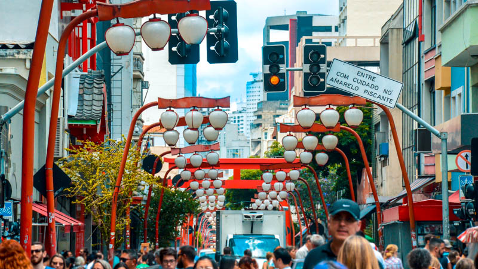
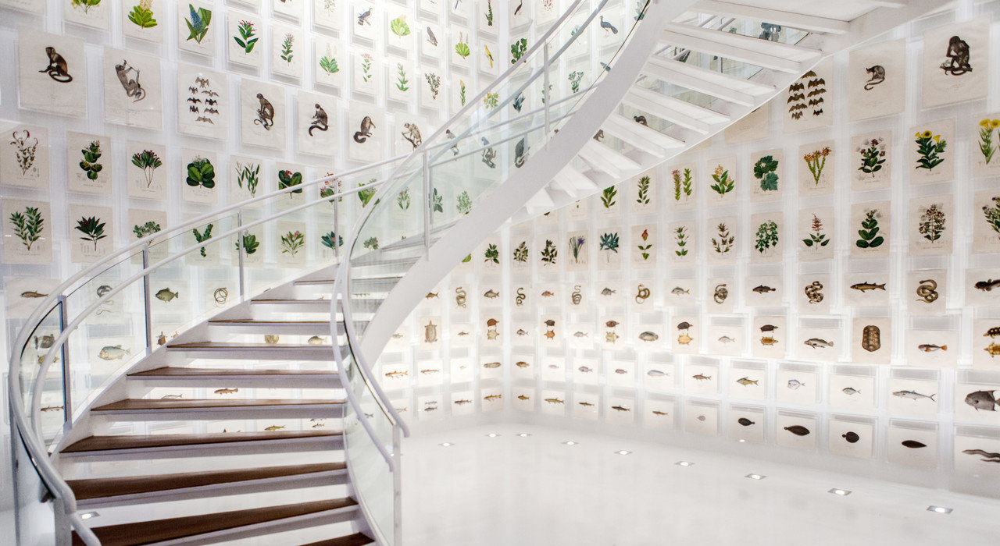

3 lugares pra você conhcer
São Paulo é a maior cidade do Brasil e um importante centro cultural, econômico e turístico do país. A cidade se destaca pela grande diversidade de atrações, reunindo história, arte, gastronomia, vida urbana intensa e uma ampla oferta de atividades culturais. Sua diversidade cultural, resultado da influência de diferentes povos e tradições, torna o destino rico em experiências para visitantes que buscam lazer, cultura e entretenimento.

Theatro Municipal de São Paulo
Um dos teatros mais importantes do Brasil, inaugurado em 1911. Recebe concertos, óperas e apresentações de balé.

Bairro da Liberdade
A Liberdade é conhecida como o principal bairro da cultura japonesa no Brasil. O local possui restaurantes típicos, feiras culturais e uma arquitetura inspirada no Japão.

Itaú Cultural
O Itaú Cultural é um centro cultural localizado na Avenida Paulista que promove exposições, eventos artísticos e atividades relacionadas à cultura brasileira.